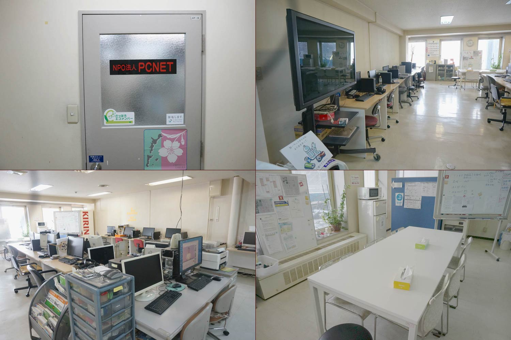

地域活動支援センター
PCNET

- 就業時間：
- 9:30-15:00
- 定 員：
- 30名
- 作業内容：
- データ入力、テープ起こし
デザイン、印刷業務
(名刺、チラシ等）、DTP - 住 所：
- 〒060-0051
札幌市中央区南1条東2丁目3-2
マツヒロビル４F - アクセス：
- 地下鉄東西線バスセンター前駅より
徒歩3分 - Ｈ Ｐ：
- http://www.pcnetjapan.jp/chikatsu/
- 電話番号：
- 011-209-3881
- F A X ：
- 011-209-3882